สถาปัตยกรรมแบบไฮบริด: สิ่งที่ดีที่สุดของทั้งสองโลกด้วย Supabase และ Spring Boot
เผยแพร่เมื่อ 14 January 2026
แทนที่จะต้องเลือกระหว่างความเรียบง่ายของ Supabase กับความทรงพลังของ Spring Boot ทำไมไม่รวมทั้งสองเข้าด้วยกันล่ะ? ค้นพบสถาปัตยกรรมแบบไฮบริดที่ใช้ประโยชน์จากสิ่งที่ดีที่สุดของแต่ละเทคโนโลยี
- ก๊อก ๆ
-
[]
- ภาวะทางเลือกเท็จของสถาปัตยกรรมสมัยใหม่
- วิสัยทัศน์ทางสถาปัตยกรรม
- หลักการออกแบบ
- การจัดการลำดับการไหล
- เมทริกซ์การตัดสินใจ
- ตัวอย่างสถาปัตยกรรมตามประเภทโครงการ
- กลยุทธ์การย้ายระบบแบบค่อยเป็นค่อยไป
- ต้นทุนและข้อพิจารณาด้านการดำเนินงาน
- บทสรุป: ความสมดุลที่สมบูรณ์แบบ
- เพื่อก้าวต่อไป
- แนวโน้มการพัฒนา
- คำบอกเล่าทางสถาปัตยกรรม
- บทสรุป: กระบวนทัศน์สถาปัตยกรรมสมัยใหม่
- บทสรุปสุดท้าย
ภาวะทางเลือกเท็จของสถาปัตยกรรมสมัยใหม่
เมื่อเราสร้างแอปพลิเคชันสมัยใหม่ด้วยฟรอนต์เอนด์แบบสแตติก เรามักจะเจอกับทางเลือกที่มีเพียงสองทาง:
-
เดิมพันทุกอย่างกับโซลูชัน Backend-as-a-Service(Supabase, Firebase) - เรียบง่ายแต่มีข้อจำกัด
-
สร้างแบ็กเอนด์ที่สมบูรณ์(Spring Boot, Node.js) - ทรงพลังแต่ซับซ้อน
การเลือกนี้เป็นภาวะสองทางลวง สถาปัตยกรรมแบบไฮบริดเสนอทางเลือกที่สาม: ใช้แต่ละเทคโนโลยีในจุดที่เทคโนโลยีนั้นโดดเด่นที่สุด
วิสัยทัศน์ทางสถาปัตยกรรม
สถาปัตยกรรมแบบดั้งเดิม: โมโนลิธิก
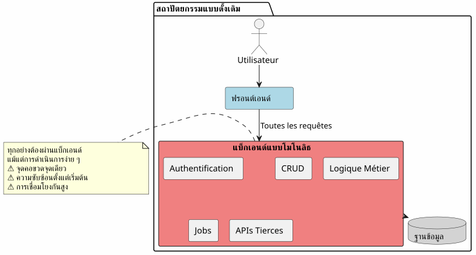
ในแนวทางนี้ แม้แต่การดำเนินการที่ง่ายที่สุด (การอ่านบทความ การสร้างคอมเมนต์) ก็ต้องผ่านแบ็กเอนด์ของคุณ คุณต้องแบกรับต้นทุนของความซับซ้อนตั้งแต่วันแรก
สถาปัตยกรรม BaaS: ทุกสิ่งถูกมอบหมาย
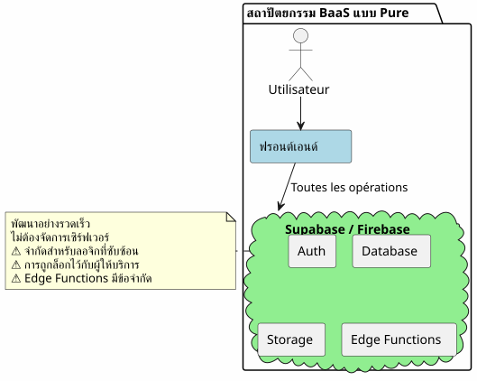
ในทางตรงกันข้าม การมอบหมายทุกอย่างให้กับ BaaS นั้นดูน่าดึงดูดในตอนแรก แต่จะเผยให้เห็นข้อจำกัดของมันอย่างรวดเร็วทันทีที่ตรรกะทางธุรกิจมีความซับซ้อนมากขึ้น
สถาปัตยกรรมแบบไฮบริด: การแยกความรับผิดชอบ
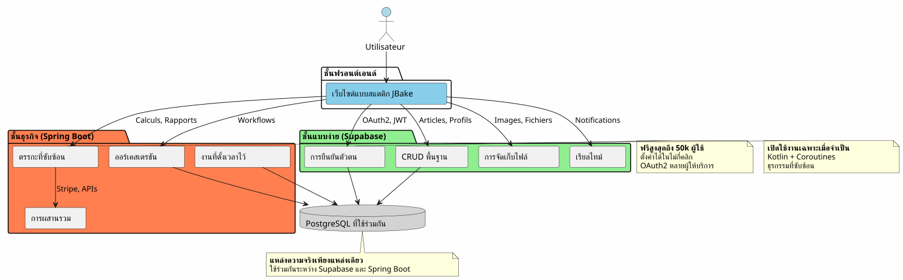
สถาปัตยกรรมแบบไฮบริดแยกความรับผิดชอบอย่างชัดเจนตามความซับซ้อนและลักษณะของการดำเนินงาน
หลักการออกแบบ
หลักการที่ 1: เริ่มต้นอย่างเรียบง่าย พัฒนาอย่างชาญฉลาด
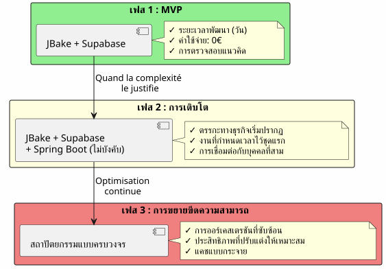
อย่าสร้าง Spring Boot ถ้าคุณไม่จำเป็นต้องใช้เริ่มต้นด้วย Supabase แล้วเพิ่ม Spring Boot เมื่อความซับซ้อนเป็นเหตุผลที่เพียงพอ
หลักการที่ 2: การแยกตามลักษณะของการดำเนินการ

หลักการที่ 3: แหล่งความจริงเพียงหนึ่งเดียว
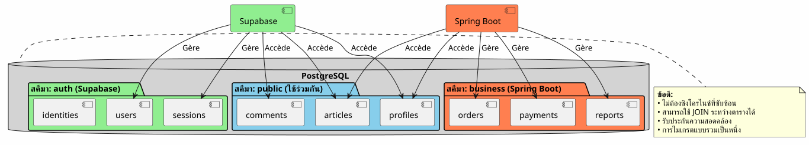
การแชร์อินสแตนซ์ PostgreSQL เดียวกันทำให้ Supabase และ Spring Boot ทำงานกับข้อมูลเดียวกันโดยไม่ต้องซิงโครไนซ์ที่ซับซ้อน
การจัดการลำดับการไหล
โฟลว์ 1 : การยืนยันตัวตนแบบรวมศูนย์
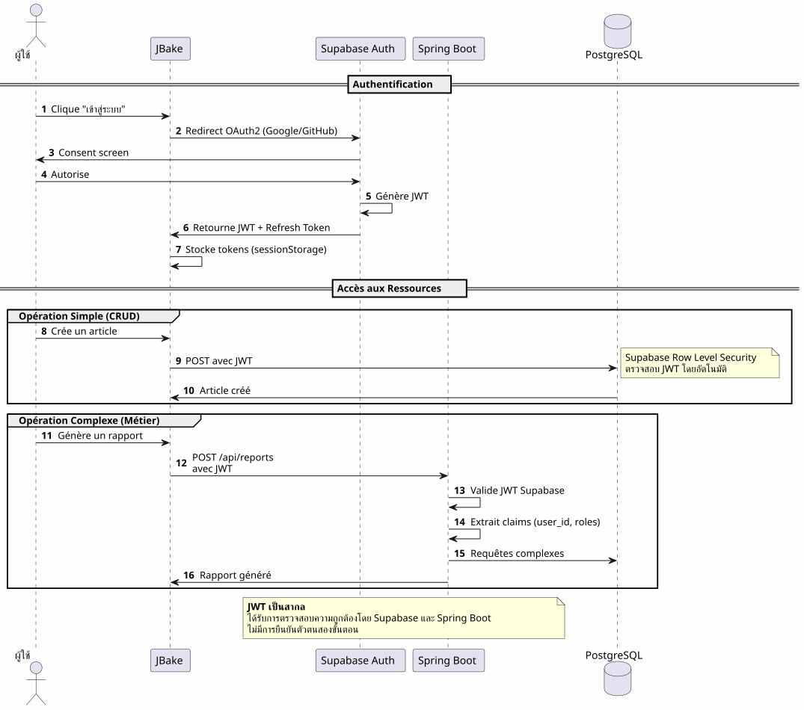
ประเด็นสำคัญ: กระบวนการยืนยันตัวตนเพียงหนึ่งเดียว, JWT เพียงตัวเดียว, ใช้ได้ทุกที่
Flux 2 : การประสานกระบวนการทางธุรกิจที่ซับซ้อน
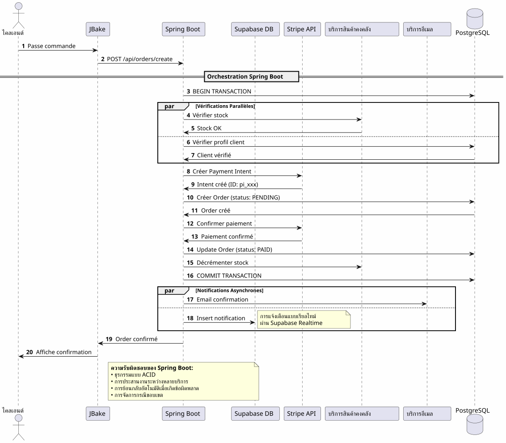
สิ่งที่ Spring Boot นำมาให้: การออร์เคสเตรชันกระบวนการที่ซับซ้อนซึ่งเกี่ยวข้องกับหลายระบบอย่างเชื่อถือได้พร้อมการรับประกันระดับธุรกรรม
โฟลว์ 3: งานที่ตั้งเวลาและการซิงโครไนซ์
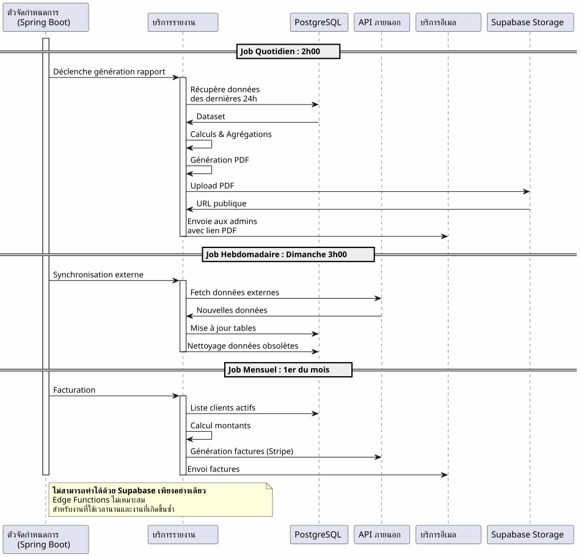
สิ่งที่ Spring Boot นำมา: งานที่กำหนดเวลาไว้อย่างเชื่อถือได้พร้อมการจัดการสถานะ การลองใหม่โดยอัตโนมัติ และการรับประกันการดำเนินการ
เมทริกซ์การตัดสินใจ
เมื่อใดควรใช้ Supabase?

ควรใช้ Spring Boot เมื่อใด?

ตัวอย่างสถาปัตยกรรมตามประเภทโครงการ
บล็อก / พอร์ตโฟลิโอ
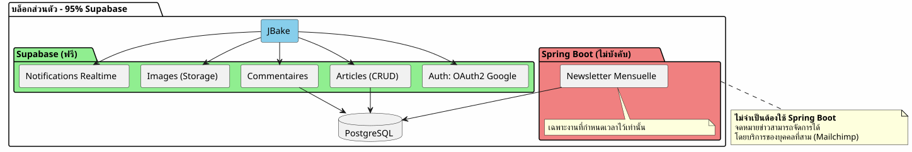
คำตัดสิน: 100% Supabase ก็เพียงพอเหลือเฟือแล้ว
แอปพลิเคชัน SaaS
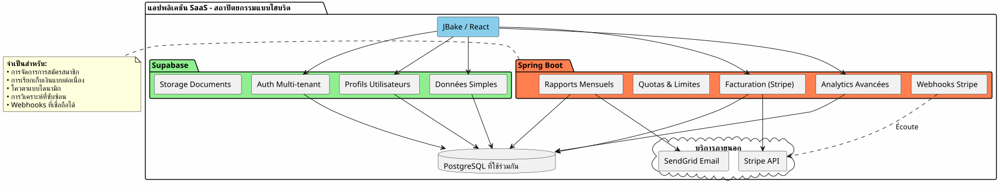
คำตัดสิน: จำเป็นต้องใช้สถาปัตยกรรมแบบไฮบริด Supabase สำหรับส่วนหลัก Spring Boot สำหรับส่วนที่สำคัญ (การชำระเงิน การออกใบแจ้งหนี้)
อีคอมเมิร์ซ
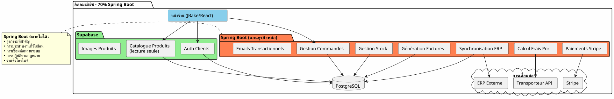
คำตัดสิน: Spring Boot จำเป็นอย่างยิ่ง Supabase สำหรับการยืนยันตัวตนและแค็ตตาล็อกเท่านั้น
กลยุทธ์การย้ายระบบแบบค่อยเป็นค่อยไป
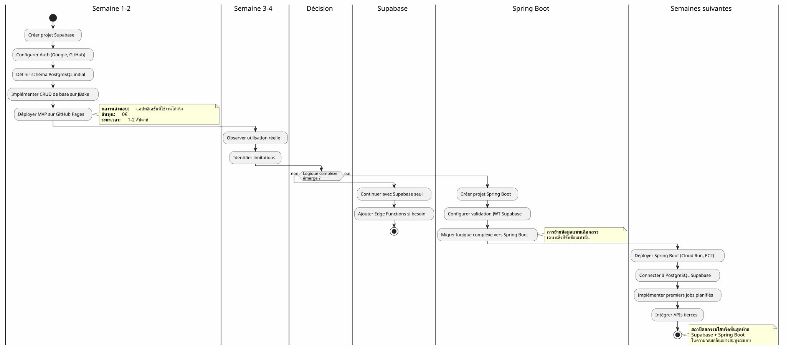
ต้นทุนและข้อพิจารณาด้านการดำเนินงาน
โครงสร้างต้นทุน
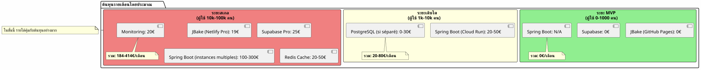
ความรับผิดชอบด้านการปฏิบัติการ
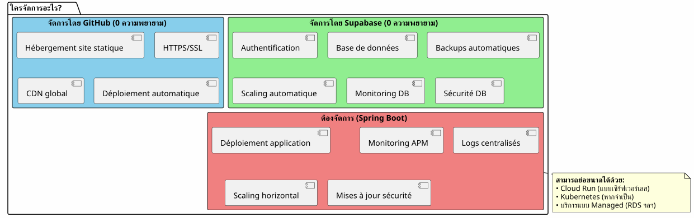
บทสรุป: ความสมดุลที่สมบูรณ์แบบ
สถาปัตยกรรมไฮบริด Supabase + Spring Boot ไม่ใช่การประนีประนอม แต่เป็นการประสานพลัง.
หลักการที่ควรจดจำ

เมื่อใดควรเลือกสถาปัตยกรรมนี้?
✅ สถาปัตยกรรมนี้เหมาะอย่างยิ่งหาก:
-
คุณต้องการเริ่มต้นอย่างรวดเร็ว (MVP ภายในไม่กี่วัน ไม่ใช่หลายเดือน)
-
คุณคาดการณ์ถึงการเติบโตของความซับซ้อนทางธุรกิจ
-
คุณต้องการลดต้นทุนเริ่มต้นให้เหลือน้อยที่สุด
-
คุณชอบ PostgreSQL และต้องการแหล่งความจริงเพียงหนึ่งเดียว
-
คุณชื่นชอบ Kotlin และ Coroutines สำหรับโค้ดธุรกิจ
-
คุณต้องการหลีกเลี่ยงการผูกติดกับผู้ขายโดยสิ้นเชิง
❌ สถาปัตยกรรมนี้ไม่เหมาะสมหาก:
-
โปรเจกต์ของคุณเรียบง่ายและจะยังคงเป็นเช่นนั้น (บล็อกส่วนตัว → Supabase 100% ก็เพียงพอ)
-
คุณมีสแต็กแบ็กเอนด์ที่จัดตั้งขึ้นแล้วซึ่งคุณเชี่ยวชาญ
-
คุณชอบโมโนลิธแบบดั้งเดิม
-
คุณต้องใช้ .NET, Python หรือภาษาแบ็กเอนด์อื่น ๆ
ภาพรวมสุดท้าย
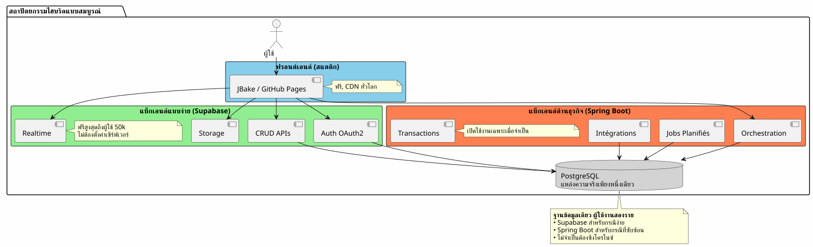
ที่สุดของทั้งสองโลก
สถาปัตยกรรมนี้ให้คุณ:
🚀 ความเร็วของ Supabase
-
เริ่มได้ในหลักชั่วโมง ไม่ใช่หลักสัปดาห์
-
การยืนยันตัวตนด้วย OAuth2 ในไม่กี่คลิก
-
API REST ที่สร้างขึ้นโดยอัตโนมัติ
-
ไม่ต้องกำหนดค่าเซิร์ฟเวอร์
💪 พลังแห่ง Spring Boot
-
Kotlin และ Coroutines สำหรับโค้ดอะซิงโครนัสที่สง่างาม
-
การประสานกระบวนการทางธุรกิจที่ซับซ้อน
-
งานที่ตั้งเวลาไว้อย่างน่าเชื่อถือ
-
ธุรกรรมที่รับประกัน ACID
-
ระบบนิเวศ Spring ที่สมบูรณ์
💰 เศรษฐกิจก้าวหน้า
-
0€ สำหรับเริ่มต้นและยืนยัน
-
ต้นทุนที่ตามการเติบโต
-
ไม่ทำวิศวกรรมเกินความจำเป็นก่อนเวลา
🎯 ความยืดหยุ่นทางสถาปัตยกรรม
-
การย้ายแบบค่อยเป็นค่อยไปโดยไม่ต้องออกแบบใหม่
-
เพิ่ม Spring Boot เฉพาะเมื่อจำเป็น
-
ไม่มี vendor lock-in โดยสมบูรณ์
-
สถาปัตยกรรมที่ขยายได้
เพื่อก้าวต่อไป
ทรัพยากรทางเทคนิค
เอกสารประกอบ Supabase:
เอกสาร Spring Boot :
บทความเพิ่มเติม:
-
การรักษาความปลอดภัยของ API ด้วย JWT
-
การปรับปรุงประสิทธิภาพ PostgreSQL
-
แพตเทิร์นการย้ายระบบแบบค่อยเป็นค่อยไป
-
การจัดการข้อผิดพลาดในสถาปัตยกรรมแบบกระจาย
กรณีการใช้งานจริง
สถาปัตยกรรมแบบไฮบริดนี้ถูกนำไปใช้อย่างประสบความสำเร็จใน:
-
SaaS B2B: การยืนยันตัวตน Supabase, การเรียกเก็บเงิน Spring Boot
-
มาร์เก็ตเพลส: แค็ตตาล็อก Supabase, ธุรกรรม Spring Boot
-
แพลตฟอร์มเนื้อหาบทความ Supabase, การวิเคราะห์ Spring Boot
-
เครื่องมือภายใน: CRUD Supabase, เวิร์กโฟลว์ Spring Boot
รายการตรวจสอบการเริ่มต้น
ระยะที่ 1 - รากฐาน (สัปดาห์ที่ 1)
-
สร้างบัญชี Supabase ตั้งค่าโปรเจกต์ PostgreSQL - [ ] เปิดใช้งาน Auth (Google, GitHub) - [ ] กำหนดสคีมาเริ่มต้น - [ ] ตั้งค่า Row Level Security - [ ] ทดสอบ API จาก JBake
ระยะที่ 2 - MVP (สัปดาห์ที่ 2-3)
-
พัฒนาหน้าหลัก - [ ] ผสานการยืนยันตัวตน OAuth2 - [ ] สร้างแบบฟอร์ม CRUD - [ ] กำหนดค่า Storage สำหรับไฟล์ - [ ] ปรับใช้บน GitHub Pages - [ ] ทดสอบในสภาพจริง
เฟส 3 - วิวัฒนาการ (ตามความจำเป็น)
-
ระบุความต้องการด้านตรรกะที่ซับซ้อน - [ ] สร้างโปรเจกต์ Spring Boot หากจำเป็น - [ ] ตั้งค่าการตรวจสอบ JWT ของ Supabase - [ ] เชื่อมต่อกับ PostgreSQL Supabase - [ ] ย้ายฟีเจอร์ที่ซับซ้อน - [ ] ใช้งานงานที่กำหนดเวลาไว้ - [ ] ดีพลอย Spring Boot (Cloud Run, ฯลฯ)
แอนติแพตเทิร์นที่ควรหลีกเลี่ยง
❌ สิ่งที่ไม่ควรทำ:
-
ทำสำเนาข้อมูลระหว่าง Supabase และ Spring Boot
-
สร้างฐานข้อมูล PostgreSQL แยกกันสองฐาน
-
เขียนโค้ดการยืนยันตัวตนด้วยตัวเอง
-
ใช้ Spring Boot สำหรับการทำ CRUD แบบง่าย
-
ออกแบบสถาปัตยกรรมเกินความจำเป็นตั้งแต่เริ่มต้น
-
ข้าม Row Level Security ของ Supabase
✅ ควรทำสิ่งนี้แทน:
-
แชร์ฐานข้อมูล PostgreSQL เพียงฐานเดียว
-
ให้ Supabase จัดการการยืนยันตัวตน
-
ใช้ Spring Boot เพียงเพื่อความซับซ้อน
-
เริ่มต้นอย่างง่าย พัฒนาอย่างค่อยเป็นค่อยไป
-
ใช้ประโยชน์จากจุดแข็งของแต่ละเทคโนโลยี
-
รักษาความปลอดภัยด้วย RLS ในระดับฐานข้อมูล
แนวโน้มการพัฒนา
การเพิ่มความสามารถใหม่
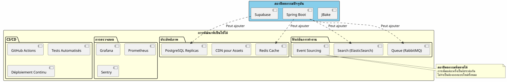
การขยายแนวนอน
เมื่อแอปพลิเคชันของคุณเติบโต สถาปัตยกรรมแบบไฮบริดจะขยายตัวได้เองตามธรรมชาติ:
Supabase :
-
ขยายขนาดโดยอัตโนมัติได้ถึงหลายล้านการดำเนินการ
-
Read replicas สำหรับประสิทธิภาพการอ่าน
-
การกู้คืน ณ จุดเวลาเพื่อความปลอดภัย
Spring Boot :
-
หลายอินสแตนซ์อยู่หลังโหลดบาลานเซอร์
-
การออกแบบแบบ stateless ช่วยให้การขยายระบบในแนวนอนทำได้ง่ายขึ้น
-
Kubernetes สำหรับการออร์เคสเตรชันหากจำเป็น
PostgreSQL :
-
การแบ่งพาร์ติชันสำหรับตารางขนาดใหญ่
-
การรวมกลุ่มการเชื่อมต่อ (PgBouncer)
-
Sharding หากจำเป็นจริง ๆ (หายาก)
คำบอกเล่าทางสถาปัตยกรรม
สตาร์ทอัพ SaaS (ผู้ใช้ 50k)
No French text was provided to translate. เราเริ่มต้นด้วย Supabase 100% เมื่อมีผู้ใช้ 5k เราเพิ่ม Spring Boot เฉพาะสำหรับการเรียกเก็บเงินผ่าน Stripe และรายงานรายเดือน หนึ่งปีต่อมา 80% ของการดำเนินงานของเรายังคงผ่าน Supabase Spring Boot ดูแลเฉพาะส่วนที่สำคัญเท่านั้น การแยกส่วนนี้ทำให้เราขยายระบบได้โดยไม่ต้องปรับโครงสร้างใหม่ I don’t see any French text to translate. Please provide the text you’d like me to translate from French to Thai.
แพลตฟอร์ม E-learning (ผู้ใช้ 10k คน)
__ การยืนยันตัวตน OAuth2 ของ Supabase ทำให้เราประหยัดเวลาการพัฒนาไปได้ 3 สัปดาห์ API ที่สร้างขึ้นอัตโนมัติจัดการแค็ตตาล็อกหลักสูตรทั้งหมดของเรา Spring Boot ใช้เพียงสำหรับใบรับรอง PDF และอีเมลแจ้งความคืบหน้า สถาปัตยกรรมเรียบง่าย ดูแลรักษาได้ และขยายระบบได้ Please provide the French text you’d like me to translate into Thai.
มาร์เก็ตเพลส B2B (ผู้ใช้ 3k คน)
Please provide the French text you’d like me to translate into Thai. Spring Boot จัดการธุรกรรมระหว่างผู้ซื้อและผู้ขาย (สำคัญยิ่ง) Supabase จัดการทุกอย่างที่เหลือ: โปรไฟล์ การส่งข้อความแบบเรียลไทม์ เอกสาร การที่ทั้งสองใช้ฐานข้อมูล PostgreSQL เดียวกันช่วยให้เราเลี่ยงการซิงโครไนซ์ที่ซับซ้อนได้ เป็นทางเลือกเชิงสถาปัตยกรรมที่ดีที่สุดที่เราเคยทำ __
บทสรุป: กระบวนทัศน์สถาปัตยกรรมสมัยใหม่
สถาปัตยกรรมไฮบริด Supabase + Spring Boot ถือเป็นกระบวนทัศน์ใหม่:ความเชี่ยวชาญเฉพาะทางด้านสถาปัตยกรรม.
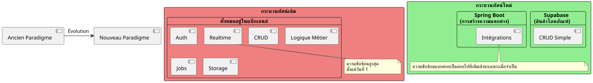
หลักการพื้นฐาน:อย่าสร้างสิ่งที่ มีอยู่แล้วในรูปของบริการ มุ่งเน้นไปที่สิ่งที่ทำให้แอปพลิเคชันของคุณแตกต่าง
กฎ 80/20
ในแอปพลิเคชันส่วนใหญ่:
-
80% ของการดำเนินงานเป็น CRUD มาตรฐาน → Supabase
-
20% ของการดำเนินงานจำเป็นต้องใช้ตรรกะทางธุรกิจ → Spring Boot
กฎธรรมชาติข้อนี้เป็นเหตุผลรองรับสถาปัตยกรรมแบบไฮบริด
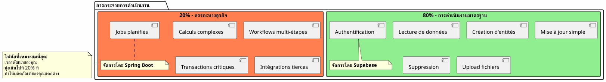
บทสรุปสุดท้าย
สถาปัตยกรรมแบบไฮบริดไม่ใช่การประนีประนอมทางเทคนิค แต่เป็นการตัดสินใจเชิงกลยุทธ์.
ซึ่งช่วยให้คุณ:
-
✅ เริ่มต้นอย่างรวดเร็วด้วย MVP ที่ใช้งานได้
-
✅ ตรวจสอบตลาดของคุณโดยไม่ต้องลงทุนหนัก
-
✅ พัฒนาไปอย่างค่อยเป็นค่อยไปเมื่อความซับซ้อนเรียกร้องให้ทำเช่นนั้น
-
✅ ควบคุมต้นทุนของคุณในทุกขั้นตอน
-
✅ ใช้ประโยชน์จากสิ่งที่ดีที่สุดของแต่ละเทคโนโลยี
-
✅ หลีกเลี่ยงการออกแบบเกินความจำเป็นก่อนเวลา
-
✅ รักษาความยืดหยุ่นสำหรับอนาคต
มันแสดงถึง:
-
No French text was provided to translate. Please send the text you’d like me to translate from French to Thai.ปฏิบัตินิยม: ทุกเทคโนโลยีที่เธอเชี่ยวชาญ
-
🚀ความเร็ว: ระยะเวลาออกสู่ตลาดต่ำสุด
-
💰เศรษฐกิจ: ต้นทุนที่สอดคล้องกับคุณค่า
-
🔮ความสามารถในการขยายขีดความสามารถ: สถาปัตยกรรมที่เติบโตไปพร้อมกับคุณ
-
No French text was provided to translate. Please send the source text.ความทนทานบริการที่ผ่านการพิสูจน์และเชื่อถือได้
ก้าวต่อไปของคุณ
หากสถาปัตยกรรมนี้โดนใจคุณ นี่คือจุดที่ควรเริ่มต้น:
-
สร้างบัญชี Supabase(ฟรี)
-
กำหนดสคีมาข้อมูลขั้นต่ำของคุณ
-
กำหนดค่าการยืนยันตัวตน OAuth2
-
สร้างหน้า JBake หน้าแรกของคุณที่เรียกใช้ API
-
ปรับใช้บน GitHub Pages
คุณจะมี MVP ที่ใช้งานได้ในไม่กี่วัน.
Spring Boot จะมาเองตามธรรมชาติเมื่อคุณจำเป็นต้องใช้มัน ไม่ใช่ก่อนหน้านั้น
สถาปัตยกรรมแบบไฮบริด คือศิลปะของการสร้างสิ่งที่จำเป็นอย่างแม่นยำ เมื่อถึงเวลาที่เหมาะสม
ขอให้พัฒนาต่อไปอย่างราบรื่น! 🚀
แบ่งปันบทความนี้หากคุณคิดว่ามันสามารถช่วยนักพัฒนาคนอื่นๆ ในการเลือกสถาปัตยกรรมที่เหมาะสมได้